library(DOSE)
data(geneList)
de <- names(geneList)[abs(geneList) > 2]
edo <- enrichDGN(de)14 Visualization of functional enrichment result
The enrichplot package implements several visualization methods to help interpret enrichment results. It supports visualizing enrichment results obtained from DOSE (Yu et al. 2015), clusterProfiler (Yu et al. 2012; Wu et al. 2021), ReactomePA (Yu and He 2016) and meshes (Yu 2018). Both over representation analysis (ORA) and gene set enrichment analysis (GSEA) are supported.
Note: Several visualization methods were first implemented in DOSE and rewrote from scratch using ggplot2. If you want to use the old methods, you can use the doseplot package.
14.1 Bar Plot
Bar plot is the most widely used method to visualize enriched terms. It depicts the enrichment scores (e.g. p values) and gene count or ratio as bar height and color Figure 14.1. Users can specify the number of terms (most significant) or selected terms (see also the FAQ) to display via the showCategory parameter.
library(enrichplot)
barplot(edo, showCategory=20) Other variables that derived using mutate can also be used as bar height or color as demonstrated in Section 18.4 and Figure 14.1.
library(clusterProfiler)
mutate(edo, qscore = -log(p.adjust, base=10)) |>
barplot(x="qscore")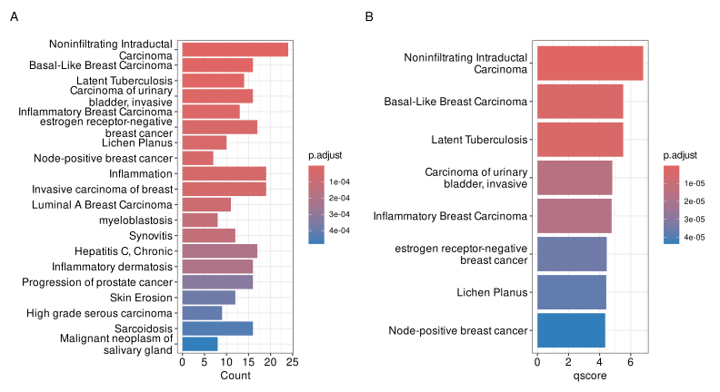
14.1.1 Split top categories by ontology
When visualizing GO enrichment across all ontologies (ont = "ALL"), it is often more informative to show the top terms within each ontology (BP/CC/MF) rather than selecting the top terms globally. barplot() forwards additional arguments via ..., and one useful option is split. Setting split = "ONTOLOGY" will perform the “top N per ontology” selection and makes it straightforward to color (and later facet) the results by the ontology.
library(enrichplot)
library(ggplot2)
p_nofacet <- barplot(
ego_all,
x = "Count",
showCategory = 15,
split = "ONTOLOGY"
) +
aes(fill = ONTOLOGY) +
scale_fill_brewer(palette = "Set2")
p_nofacet +
geom_text(aes(label = Count), nudge_x = 2) +
scale_y_discrete()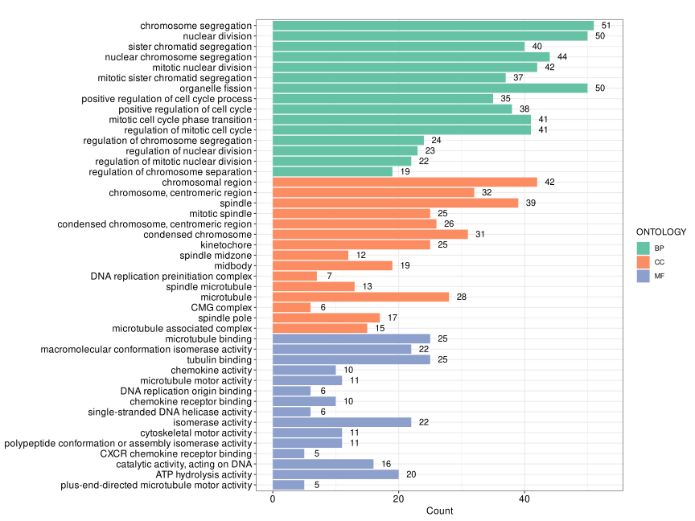
split = "ONTOLOGY" (no faceting).
Note that barplot() wraps long term descriptions onto multiple lines by default (controlled by label_format, default is 30). If you prefer to keep the y-axis labels on a single line, you can override the default scale by adding + scale_y_discrete() as shown above.
p_facet <- barplot(
ego_all,
x = "Count",
showCategory = 15,
split = "ONTOLOGY"
) +
aes(fill = ONTOLOGY) +
scale_fill_brewer(palette = "Set2") +
enrichplot::autofacet(by = "row", scales = "free")
p_facet + scale_y_discrete()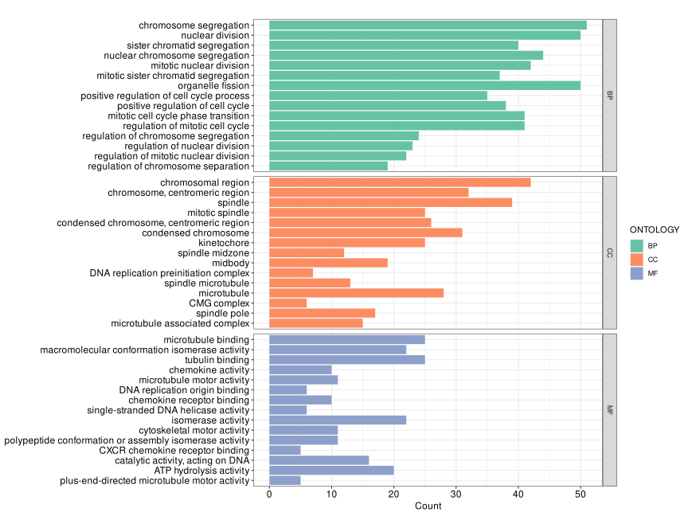
autofacet() splitting by ontology.
If the fortified data contain an ONTOLOGY column (as in the output generated by split = "ONTOLOGY"), you can facet the plot directly with + enrichplot::autofacet(), and it will automatically split panels by ontology.
14.2 Dot plot
Dot plot is similar to bar plot with the capability to encode another score as dot size.
library(ggplot2)
edo2 <- gseDO(geneList)
dotplot(edo, showCategory=30, label_format=NULL) + ggtitle("dotplot for ORA")
dotplot(edo2, showCategory=30, label_format=NULL) + ggtitle("dotplot for GSEA")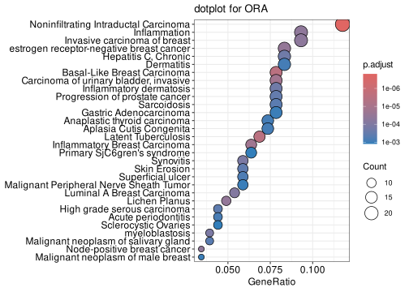
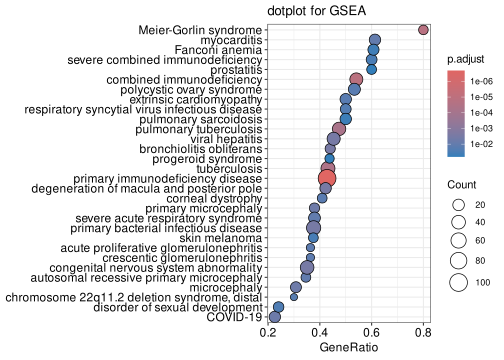
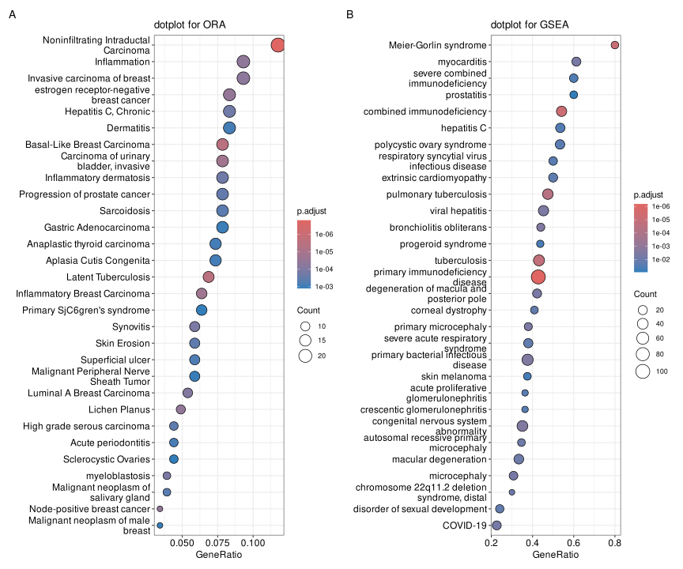
Note: The dotplot() function also works with compareCluster() output.
14.2.1 Highlighting specific pathways
The label_format parameter in dotplot() accepts a function to format y-axis labels, which can be used to highlight specific pathways. This is useful for emphasizing pathways of interest in publication figures.
First, perform enrichment analysis:
library(DOSE)
data(geneList)
de <- names(geneList)[1:100]
x <- enrichDO(de)Define a function to highlight pathways containing “cancer”:
f <- function(ids) {
i <- grepl('cancer', ids)
ids[i] <- paste0("<i style='color:#009E73'>", ids[i], "</i>")
return(ids)
}To render the HTML formatting, use the ggtext package with element_markdown():
library(ggplot2)
library(ggtext)
library(enrichplot)
dotplot(x, label_format=f) + theme(axis.text.y = element_markdown())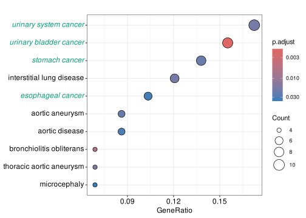
You can also highlight specific pathways by index:
f2 <- function(ids) {
ids[1] <- paste0("<i style='color:#009E73'>", ids[1], "</i>")
ids[2] <- paste0("<i style='color:#0072B2'>**", ids[2], "**</i>")
return(ids)
}
dotplot(x, label_format=f2) + theme(axis.text.y = element_markdown())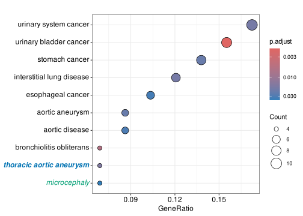
Or apply different colors to all pathways:
f3 <- function(ids) {
# cols <- rcartocolor::carto_pal(length(ids), "Vivid")
# cols <- colorspace::rainbow_hcl(length(ids))
cols <- rainbow(length(ids))
ids <- paste0("<i style='color:", cols, "'>**", ids, "**</i>")
return(ids)
}
dotplot(x, label_format=f3) + theme(axis.text.y = element_markdown())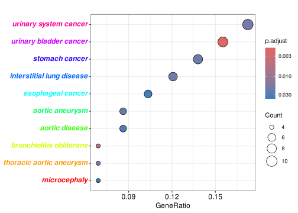
14.2.2 Formula interface of dotplot
The x variable of dotplot() supports a formula interface, allowing users to use derived variables. For example, we can calculate GeneRatio/BgRatio or -log(p.adjust) and use them as the x-axis variable.
p1 <- dotplot(edo, x = ~GeneRatio/BgRatio)
p2 <- dotplot(edo, x = ~ -log(p.adjust))
plot_list(p1, p2, ncol=2, tag_levels='A')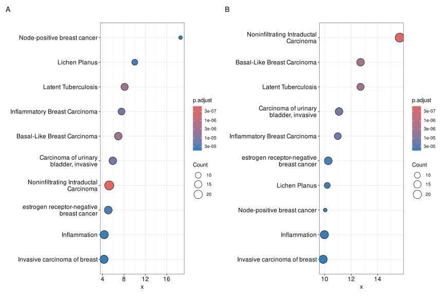
x = ~GeneRatio/BgRatio. (B) x = ~ -log(p.adjust).
This feature provides great flexibility in visualization. For instance, the Rich Factor is a common metric defined as the ratio of the number of differentially expressed genes annotated in a pathway to the total number of genes annotated in that pathway.
\[Rich Factor = \frac{Count}{BgRatio \times N}\]
where \(N\) is the total number of genes in the background distribution.
We can easily visualize the Rich Factor using the formula interface.
N <- 8007 # total number of genes in the background
dotplot(edo, x = ~Count/(BgRatio * N))Alternatively, you can precompute derived variables with mutate() (e.g., add neglog10p = -log10(p.adjust) or richFactor = Count / (BgRatio * N)) and then pass the new column name to x. This approach is useful when you want to reuse the computed variables across multiple plots. See the dedicated section on using dplyr verbs with enrichment results in Section 18.4.
14.2.3 Adjusting dot sizes
To increase the size of the dots in the dot plot, we can use the scale_size function from the ggplot2 package. This allows us to specify the range of the dot sizes.
p1 <- dotplot(edo, showCategory=10) + ggtitle("Default")
p2 <- dotplot(edo, showCategory=10) + scale_size(range=c(2, 20)) + ggtitle("Adjusted size")
plot_list(p1, p2, ncol=2, tag_levels='A')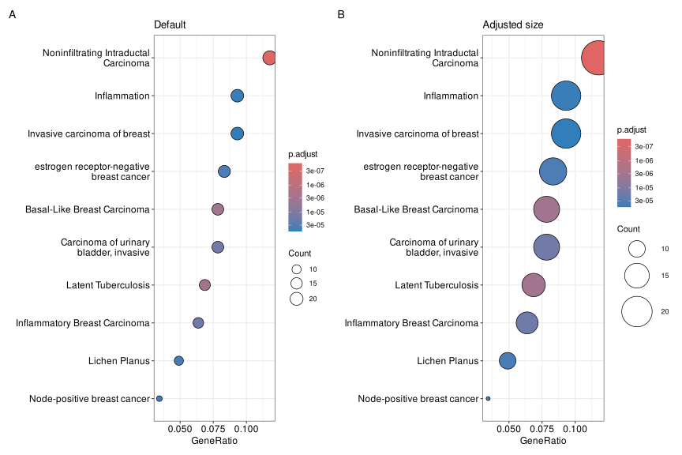
scale_size(range=c(2, 20)).
14.3 Manhattan plot
The manhattanplot() function provides a landscape-style overview of enrichment results. It arranges enriched terms along the x-axis by ontology (or by category in compareCluster() results), uses -log10() transformed significance values on the y-axis, and maps term size to a variable such as Count. The most significant terms can be labeled automatically with showCategory, making it useful for summarizing a large number of enriched terms in a single plot.
When GO enrichment is performed with ont = "ALL", manhattanplot() can display the top terms across BP, CC, and MF simultaneously by combining it with split = "ONTOLOGY".
manhattanplot(
ego_all,
color = "p.adjust",
showCategory = 12,
size = "Count",
split = "ONTOLOGY",
title = "GO enrichment landscape"
)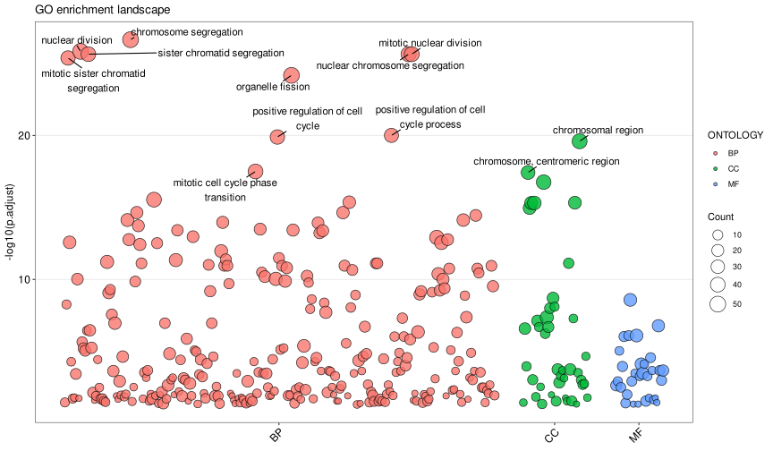
-log10(p.adjust).
The manhattanplot() function also supports gseaResult, enrichResultList, gseaResultList, and compareClusterResult objects, which makes it convenient for comparing the distribution of significant terms across multiple ontologies or experimental groups.
14.4 Dotplot2: Comparing two clusters
The dotplot2() function is a specialized version of dotplot designed for comparing two selected clusters from compareCluster results. This function provides focused visualization when users want to directly contrast specific biological conditions or experimental groups.
# Example using compareCluster result
library(clusterProfiler)
data(gcSample)
xx <- compareCluster(gcSample, fun="enrichKEGG",
organism="hsa", pvalueCutoff=0.05)
# Compare cluster A and cluster B
dotplot2(xx, vars = c("A", "B"))The dotplot2() function accepts the same parameters as dotplot() but requires cluster1 and cluster2 arguments to specify which clusters to compare. This focused visualization helps in identifying differential enrichment patterns between specific experimental conditions.
14.5 Gene-Concept Network
Both the barplot() and dotplot() only displayed most significant or selected enriched terms, while users may want to know which genes are involved in these significant terms. To consider the potential biological complexities in which a gene may belong to multiple annotation categories and provide information about numeric changes when available, we developed the cnetplot() function to extract the complex associations. The cnetplot() depicts the linkages of genes and biological concepts (e.g. GO terms or KEGG pathways) as a network. GSEA result is also supported with only core enriched genes displayed. For GSEA results, cnetplot specifically visualizes the core enriched genes identified through leading edge analysis, which represent the subset of genes most responsible for driving the enrichment signal.
Users can use the ‘fc_threshold’ parameter in the cnetplot function to filter genes to only include those with |foldChange| > fc_threshold. This allows users to plot only high fold-change genes (e.g., fc_threshold = 1). In addition, users can use the node_label_gene parameter to label genes that are shared between groups of terms (i.e. node_label_gene = "share").
## convert gene ID to Symbol
edox <- setReadable(edo, 'org.Hs.eg.db', 'ENTREZID')
p1 <- cnetplot(edox, foldChange=geneList)
p2 <- cnetplot(edox, categorySizeBy=~ -log10(pvalue), foldChange=geneList)
## only plot high fold-change genes
p3 <- cnetplot(edox, foldChange=geneList, fc_threshold = 2)
p4 <- cnetplot(edox, foldChange=geneList, node_label = "share")
plot_list(p1, p2, p3, p4, ncol=2, tag_levels = 'A')
If you would like label subset of the nodes, you can use the node_label parameter, which supports 4 possible selections (i.e. “category”, “gene”, “all” and “none”), as demonstrated in Figure 14.14.
The node_label parameter also supports enhanced functionality:
- Vector selection: Specify specific genes to label using a character vector, e.g.,
node_label = c("gene1", "gene2") - ‘exclusive’ labeling: Label only genes that belong exclusively to one category using
node_label = "exclusive" - ‘share’ labeling: Label genes that are shared between multiple categories using
node_label = "share"(as shown in the example above) - Conditional filtering: Use comparison operators to filter genes based on fold change, e.g.,
node_label = "> 1"ornode_label = "< -1"to label genes with absolute fold change greater than 1
p1 <- cnetplot(edox, node_label="category")
p2 <- cnetplot(edox, node_label="gene")
p3 <- cnetplot(edox, node_label="all")
p4 <- cnetplot(edox, node_label="none",
color_category='firebrick',
color_item='steelblue')
plot_list(p1, p2, p3, p4, ncol=2, tag_levels = 'A')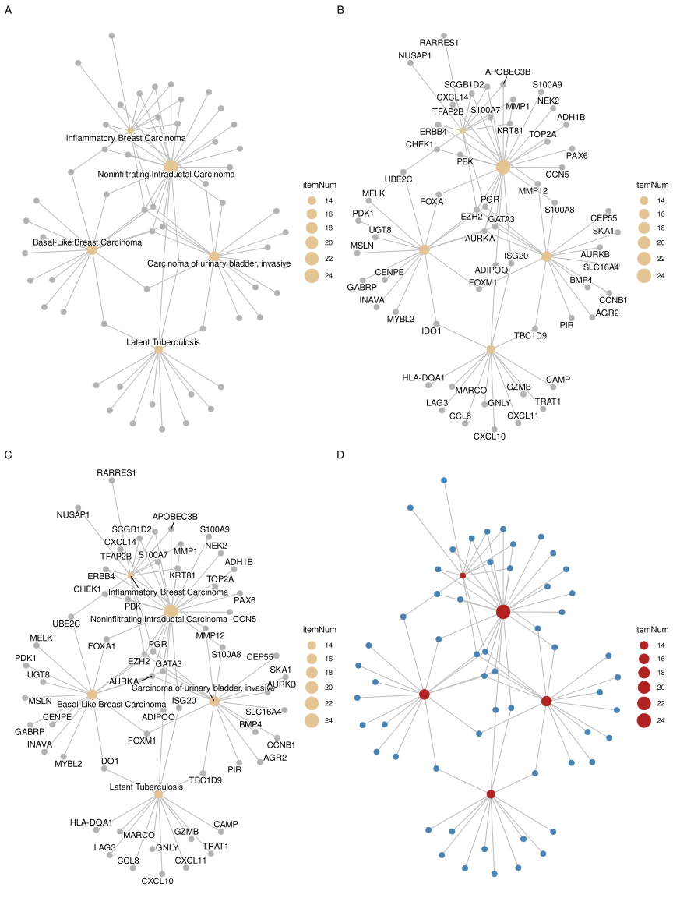
The cnetplot function can be used as a general method to visualize data relationships in a network diagram. Please refer to the vignette of ggtangle.
14.5.1 Customizing gene colors in cnetplot
Users can color specific genes by providing a named vector of fold changes containing only those genes.
foldChange <- c(rep(1, 6), rep(-1, 4))
names(foldChange) <- c("MARCO", "GZMB", "CXCL11", "CXCL10",
"LAG3", "CCL8", "PDK1", "GABRP", "MELK", "CENPE")
p <- cnetplot(edox, foldChange=foldChange)
p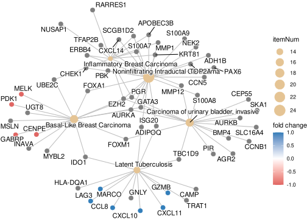
If you want to remove the color legend:
p <- p + guides(color='none')
p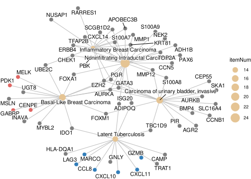
To create a custom legend, you can use a dummy data frame and geom_point:
d <- data.frame(type=c('upregulated', 'downregulated'), x=0, y=0)
g <- p + geom_point(aes(alpha=type, x=x, y=y), data=d, shape=16, size=0)
g + guides(alpha=guide_legend(
override.aes=list(color=c("blue", "red"),
alpha=1,
size=3),
title = "VIP genes",
reverse = TRUE
))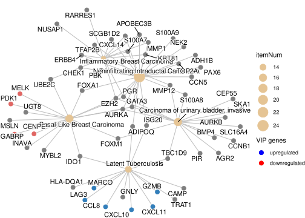
Note: The cnetplot() function also works with compareCluster() output.
14.6 Heatmap-like functional classification
The heatplot is similar to cnetplot, but displays the relationships as a heatmap. The gene-concept network may become too complicated if users want to show a large number of significant terms. The heatplot can simplify the result and make it easier to identify expression patterns.
p1 <- heatplot(edox, showCategory=5)
p2 <- heatplot(edox, foldChange=geneList, showCategory=5)
plot_list(p1, p2, ncol=1, tag_levels = 'A')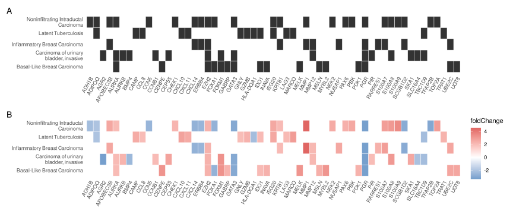
foldChange=geneList (B)
The showTop parameter can be used to limit the number of genes displayed in the heatmap. This is particularly useful when dealing with large gene sets where only the top genes based on fold change or significance need to be visualized. For example, showTop = 20 will display only the top 20 genes in the heatmap.
14.7 Tree plot
The treeplot() function performs hierarchical clustering of enriched terms. It relies on the pairwise similarities of the enriched terms calculated by the pairwise_termsim() function, which by default uses Jaccard’s similarity index (JC). Users can also use semantic similarity values when supported (e.g., GO, DO, and MeSH).
The default agglomeration method in treeplot() is ward.D, and users can specify other methods via the cluster_method parameter (e.g., ‘average’, ‘complete’, ‘median’, ‘centroid’, etc.; see also the documentation of the hclust() function). The treeplot() function will cut the tree into several subtrees (specified by the nCluster parameter, default is 5) and label subtrees using high-frequency words. This reduces the complexity of the enriched result and improves user interpretation ability.
For fine-grained control over text appearance, the leave_fontsize and clade_fontsize parameters allow users to adjust the font size of leaf labels and clade labels respectively. For example, leave_fontsize = 8, clade_fontsize = 10 will set leaf labels to 8pt and clade labels to 10pt.
library(ggtree)
edox2 <- pairwise_termsim(edox)
p1 <- treeplot(edox2, cladelab_offset=8, tiplab_offset=.3, fontsize_cladelab =5) +
hexpand(.2)
p2 <- treeplot(edox2, cluster_method = "average",
cladelab_offset=14, tiplab_offset=.3, fontsize_cladelab =5) +
hexpand(.3)
aplot::plot_list(p1, p2, tag_levels='A', ncol=2)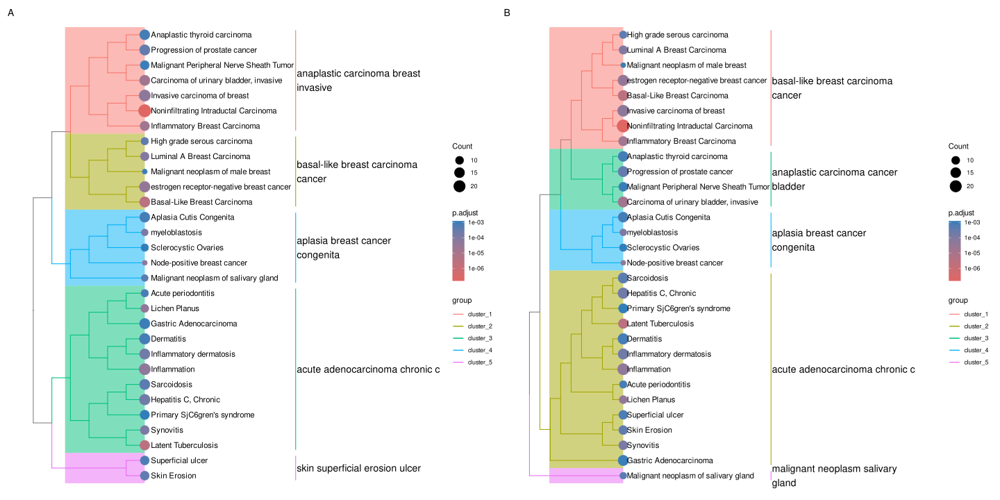
hclust_method = "average" (B)
14.8 Semantic Space Plot
While treeplot() visualizes semantic similarity using a hierarchical structure, the ssplot() (Semantic Space Plot) projects enriched terms into a low-dimensional space (e.g., using Multidimensional Scaling, MDS). This provides a complementary spatial view where terms with high semantic similarity are clustered together.
Like treeplot(), ssplot() requires pairwise_termsim() to be run first. It automatically groups terms into clusters (default nCluster is determined automatically) and labels them with representative words.
ssplot(edox2, nCluster=5) + ggtitle("ssplot (nCluster=5)")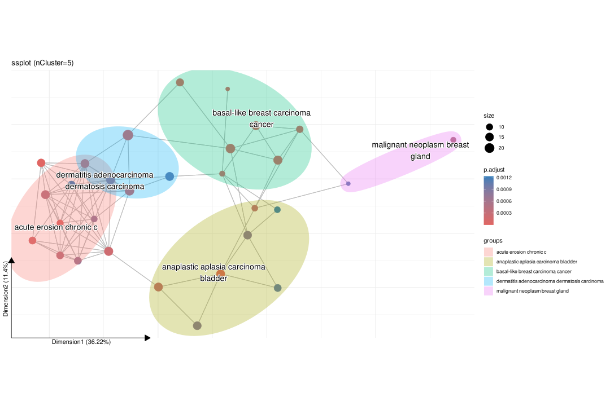
ssplot() is particularly useful for visualizing the overall semantic landscape of enrichment results and identifying distinct functional modules in a continuous space.
14.9 Enrichment Map
Enrichment map organizes enriched terms into a network with edges connecting overlapping gene sets. In this way, mutually overlapping gene sets are tend to cluster together, making it easy to identify functional module.
14.9.1 Handling GO term redundancy
GO annotations often contain redundant terms that can dominate enrichment results, potentially obscuring other biological stories. The simplify() function from the clusterProfiler package uses semantic similarity (via the GOSemSim package) to remove redundant GO terms, providing a clearer view of distinct functional modules.
# Load required packages
library(clusterProfiler)
library(enrichplot)
library(DOSE)
# Prepare example data
data(geneList, package="DOSE")
de <- names(geneList)[abs(geneList) > 2]
# Perform GO enrichment analysis
ego <- enrichGO(de, OrgDb = "org.Hs.eg.db", ont="BP", readable=TRUE)
# Remove redundant GO terms using simplify()
ego_simplified <- simplify(ego, cutoff=0.7, by="p.adjust", select_fun=min)
# Visualize both original and simplified results
ego <- pairwise_termsim(ego)
ego_simplified <- pairwise_termsim(ego_simplified)
p1 <- emapplot(ego, node_label_size=.8, size_edge=.5) +
scale_fill_continuous(low = "#e06663", high = "#327eba", name = "p.adjust",
guide = guide_colorbar(reverse = TRUE, order=1), trans='log10') +
ggtitle("Original GO terms")
p2 <- emapplot(ego_simplified, node_label_size=.8, size_edge=.5) +
scale_fill_continuous(low = "#e06663", high = "#327eba", name = "p.adjust",
guide = guide_colorbar(reverse = TRUE, order=1), trans='log10') +
ggtitle("After removing redundant terms")
# Combine plots
library(patchwork)
p1 + p2 + plot_layout(ncol = 2)
The simplify() function removes redundant GO terms based on semantic similarity (default cutoff = 0.7). This reveals distinct functional modules that might be obscured by redundant terms in the original enrichment results. The pairwise_termsim() function calculates pairwise similarities between terms, which is required for emapplot() visualization.
The emapplot function supports results obtained from hypergeometric test and gene set enrichment analysis. The size_category parameter can be used to resize nodes and the layout parameter can adjust the layout, as demonstrated in Figure 14.22.
edo <- pairwise_termsim(edo)
p1 <- emapplot(edo) # node_label = "category" (default)
p2 <- emapplot(edo, node_label = "none")
p3 <- emapplot(edo, node_label = "none", size_category=1.5)
p4 <- emapplot(edo, node_label = "none", layout="with_fr")
plot_list(p1, p2, p3, p4,
ncol=2, tag_levels = 'A',
design="AAAAAA\nBBCCDD",
heights = c(1, .3))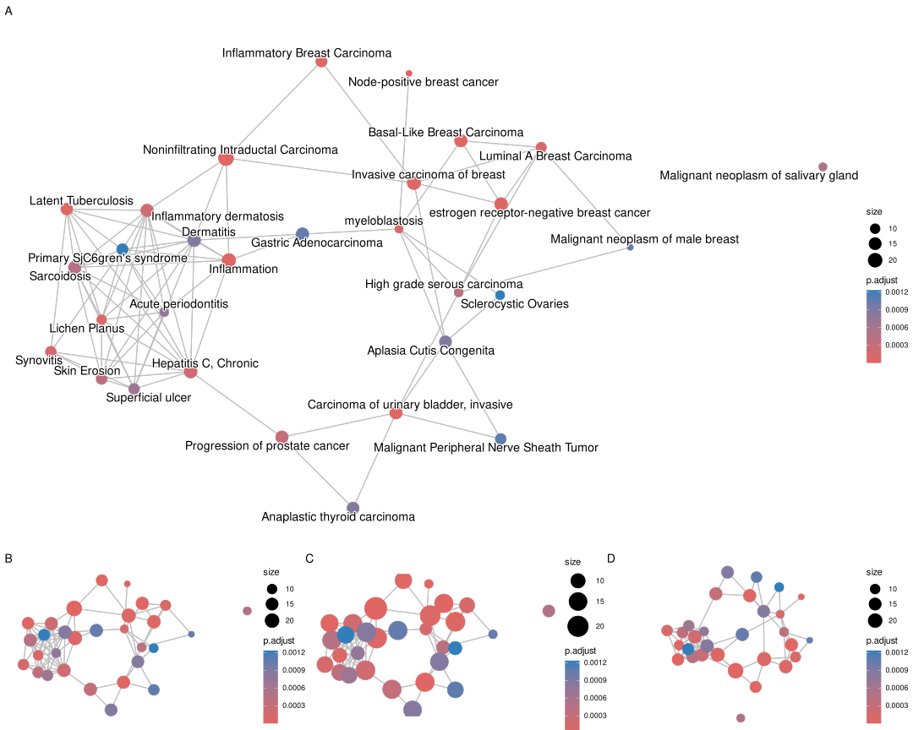
emapplot. default (A), node_label="none" (B), size_category=1.5 (C), and layout="with_fr" (D)
The node_label parameter controls how the labels were displayed. The enriched terms will be displayed by default with node_label="category" and it can be disabled by setting node_label="none".
The node_label_size parameter allows users to adjust the font size of node labels in the enrichment map. This is particularly useful when dealing with many overlapping terms or when labels need to be more readable. For example, node_label_size = 3 will increase the label size compared to the default.
If node_label="group", the emapplot function will cluster the enriched terms into different groups and only group names (determined by wordcloud) will be displayed. If node_label="all", then the enriched terms and group names will be displayed simultaneously.
p5 <- emapplot(edo, node_label = "group")
p6 <- emapplot(edo, node_label = "all")
plot_list(p5, p6,
ncol=1, tag_levels = 'A')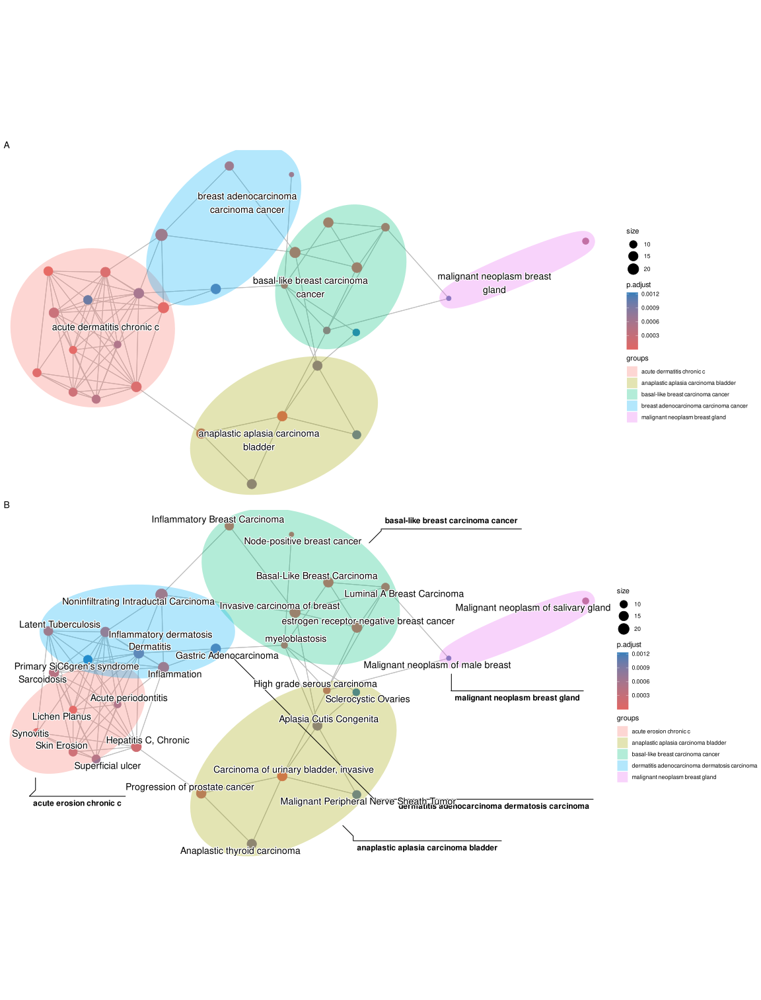
emapplot with enriched terms clustering. node_label="group" (A) and node_label="all" (B).
14.10 Biological theme comparison
The emapplot function also supports results obtained from compareCluster function of clusterProfiler package. In addition to size_category and layout parameters, the number of circles in the bottom left corner can be adjusted using the legend_n parameteras, and proportion of clusters in the pie chart can be adjusted using the pie parameter, when pie="count", the proportion of clusters in the pie chart is determined by the number of genes, as demonstrated in Figure 14.24.
library(clusterProfiler)
data(gcSample)
xx <- compareCluster(gcSample, fun="enrichKEGG",
organism="hsa", pvalueCutoff=0.05)
xx <- pairwise_termsim(xx)
p1 <- emapplot(xx)
p2 <- emapplot(xx)
p3 <- emapplot(xx, pie="count")
p4 <- emapplot(xx, pie="count", size_category=1.5, layout="kk")
plot_list(p1, p2, p3, p4, ncol=2, tag_levels = 'A')
compareCluster function of clusterProfiler package. default (A), legend_n=2 (B), pie="count" (C) and pie="count", size_category=1.5, layout="kk" (D).
14.11 UpSet Plot
The upsetplot is an alternative to cnetplot for visualizing the complex association between genes and gene sets. It emphasizes the gene overlapping among different gene sets.
upsetplot(edo)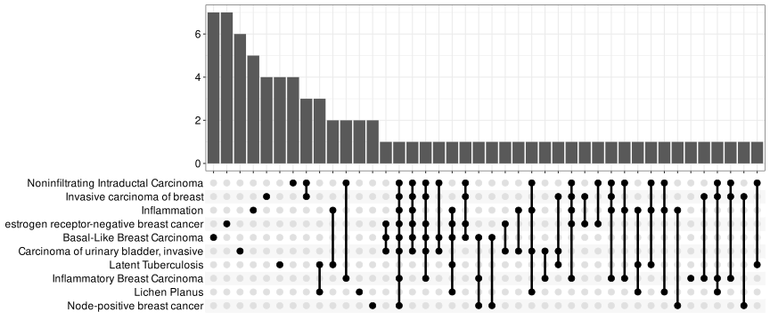
For over-representation analysis, upsetplot will calculate the overlaps among different gene sets as demonstrated in Figure 14.25. For GSEA result, it will plot the fold change distributions of different categories (e.g. unique to pathway, overlaps among different pathways).
kk2 <- gseKEGG(geneList = geneList,
organism = 'hsa',
minGSSize = 120,
pvalueCutoff = 0.05,
verbose = FALSE)
upsetplot(kk2) 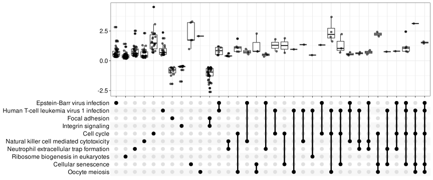
14.12 ridgeline plot for expression distribution of GSEA result
The ridgeplot will visualize expression distributions of core enriched genes for GSEA enriched categories. It helps users to interpret up/down-regulated pathways.
The stat parameter controls the geometry used to summarize the distributions. By default, ridgeplot() uses stat = "density_ridges", and users can also set stat = "binline" to display binned profiles instead.
ridgeplot(edo2)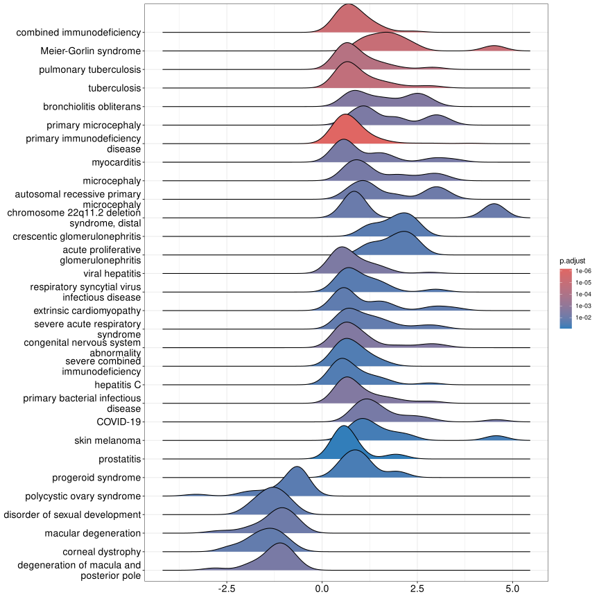
ridgeplot(edo2, stat = "binline")14.13 running score and preranked list of GSEA result
Running score and preranked list are traditional methods for visualizing GSEA result. The enrichplot package supports both of them to visualize the distribution of the gene set and the enrichment score.
p1 <- gseaplot(edo2, geneSetID = 1, by = "runningScore", title = edo2$Description[1])
p2 <- gseaplot(edo2, geneSetID = 1, by = "preranked", title = edo2$Description[1])
p3 <- gseaplot(edo2, geneSetID = 1, title = edo2$Description[1])
plot_list(p1, p2, p3, ncol=1, tag_levels='A')
by = "runningScore"). by = "runningScore" (A), by = "preranked" (B), default (C)
The gseaplot function also allows users to customize the colors of the running score line and the rank line.
p_default <- gseaplot(edo2, geneSetID = 1, title = edo2$Description[1])
p_custom <- gseaplot(edo2, geneSetID = 1, color="#DAB546", color.line='firebrick',
color.vline="steelblue", title = edo2$Description[1])
plot_list(p_default, p_custom, ncol=2, tag_levels='A')
color, color.line, and color.vline.
14.13.1 Unified color setting with set_enrichplot_color()
For consistent color settings across different plot types in enrichplot, the set_enrichplot_color() function provides a unified approach to customize color mappings. This avoids repetitive color code specifications in different plotting functions.
14.13.1.1 Function introduction
The set_enrichplot_color() function can be added to any enrichplot visualization using the + operator (ggplot2 style). It offers flexible control over color transformations and palettes.
14.13.1.2 Parameters
type: Type of color aesthetic to modify (default:"fill", can also be"color"for line colors)transform: Transformation to apply to the values used for color mapping"log10": Apply log10 transformation (default for recent versions)"identity": Use original values without transformation
colors: Custom color palette as a vector of colors (e.g.,c("red", "blue"))
14.13.1.3 Usage examples
# Example data
library(DOSE)
data(geneList)
de <- names(geneList)[abs(geneList) > 2]
edo <- enrichDGN(de)
# A: Default log10 transformation
p1 <- dotplot(edo, showCategory=15) +
set_enrichplot_color(type='fill', transform='log10') +
ggtitle("Default log10 transform")
# B: Custom colors with log10 transformation
p2 <- dotplot(edo, showCategory=15) +
set_enrichplot_color(type='fill', transform='log10', colors=c("red", "blue")) +
ggtitle("Red-blue palette")
# C: Identity transformation (no transformation)
p3 <- dotplot(edo, showCategory=15) +
set_enrichplot_color(type='fill', transform='identity') +
ggtitle("Identity transform")
library(aplot)
plot_list(p1, p2, p3, ncol=3, tag_levels='A')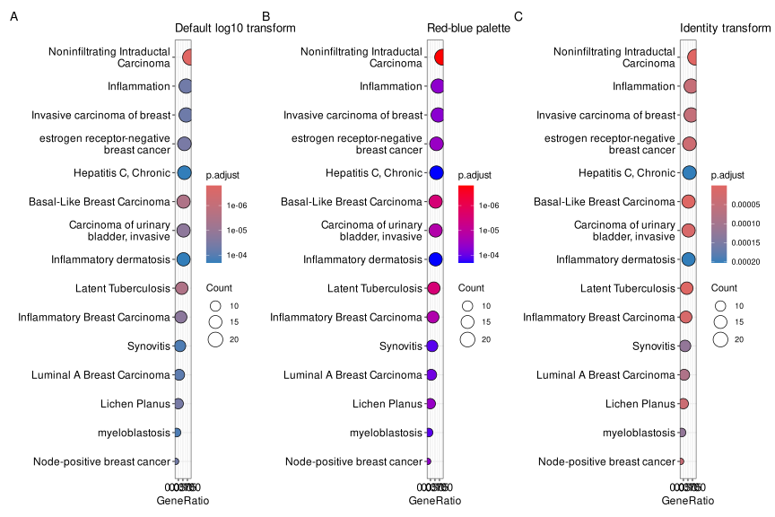
set_enrichplot_color(). (A) Default log10 transformation. (B) Custom red-blue palette with log10 transformation. (C) Identity transformation (no transformation).
Note: Starting from enrichplot v1.29.2, log10 transformation of p-values is applied by default in functions like dotplot(). The set_enrichplot_color() function allows users to override this default behavior or customize color palettes consistently across all visualization types.
Another method to plot GSEA result is the gseaplot2 function:
gseaplot2(edo2, geneSetID = 1, title = edo2$Description[1])
The gseaplot2 also supports multile gene sets to be displayed on the same figure:
gseaplot2(edo2, geneSetID = 1:3)
User can also displaying the pvalue table on the plot via pvalue_table parameter:
gseaplot2(edo2, geneSetID = 1:3, pvalue_table = TRUE,
color = c("#E495A5", "#86B875", "#7DB0DD"), ES_geom = "dot")
The pvalue_table can be customized using the following parameters:
pvalue_table_rownamesto specify row names of the table (if NULL, no row names will be displayed)pvalue_table_columnsto specify column names of the table
gseaplot2(edo2, geneSetID = 1, pvalue_table = TRUE,
pvalue_table_rownames = NULL,
pvalue_table_columns = c("ID", "NES", "p.adjust"))
User can specify subplots to only display a subset of plots:
p1 <- gseaplot2(edo2, geneSetID = 1:3, subplots = 1)
p2 <- gseaplot2(edo2, geneSetID = 1:3, subplots = 1:2)
plot_list(p1, p2, ncol=1, tag_levels = 'A')
subplots = 1 (A),subplots = 1:2 (B)
14.13.2 Labeling genes in GSEA plot
Users can use geom_gsea_gene() to label specific genes in the GSEA plot.
library(ggplot2)
library(ggrepel)
# Get gene set ID
id <- edo2$ID[1]
# Randomly select genes to label
set.seed(123)
genes <- sample(edo2[[id]], 5)
# Label genes on gseaplot2
p <- gseaplot2(edo2, geneSetID = 1, title = edo2$Description[1])
# Add geom_gsea_gene layer to the first subplot (running score)
p[[1]] <- p[[1]] + geom_gsea_gene(genes, geom=geom_label)
p
If users prefer to label with gene symbols, they can convert the gene IDs to symbols (e.g., using setReadable) before plotting.
library(clusterProfiler)
# Assuming org.Hs.eg.db is available
if (require("org.Hs.eg.db")) {
edo2_symbol <- setReadable(edo2, 'org.Hs.eg.db', 'ENTREZID')
id <- edo2_symbol$ID[1]
genes_symbol <- sample(edo2_symbol[[id]], 5)
p_symbol <- gseaplot2(edo2_symbol, geneSetID = 1, title = edo2_symbol$Description[1])
p_symbol[[1]] <- p_symbol[[1]] + geom_gsea_gene(genes_symbol, geom=geom_text_repel)
p_symbol
}The gsearank function plot the ranked list of genes belong to the specific gene set.
gsearank(edo2, 1, title = edo2[1, "Description"])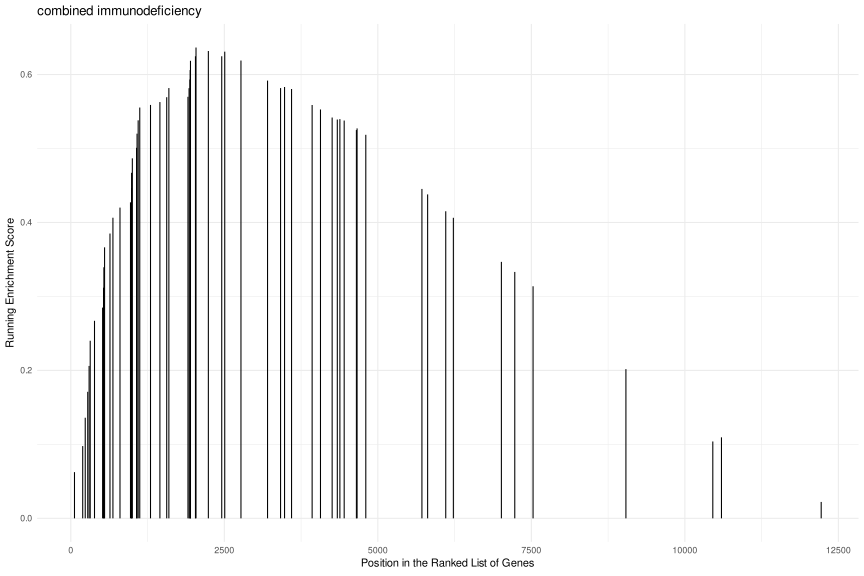
Multiple gene sets can be aligned using cowplot:
library(ggplot2)
pp <- lapply(1:3, function(i) {
anno <- edo2[i, c("NES", "pvalue", "p.adjust")]
lab <- paste0(names(anno), "=", round(anno, 3), collapse="\n")
gsearank(edo2, i, edo2[i, 2]) + xlab(NULL) +ylab(NULL) +
annotate("text", 10000, edo2[i, "enrichmentScore"] * .75, label = lab, hjust=0, vjust=0)
})
plot_list(gglist=pp, ncol=1)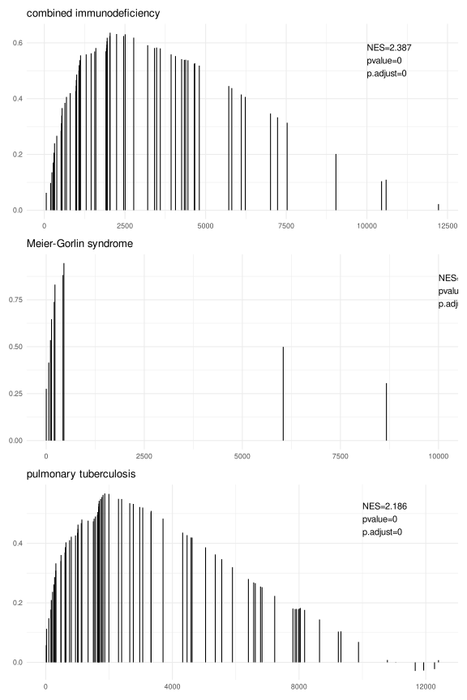
14.13.3 Extracting data from gsearank plot
The gsearank function can also output the data used for plotting by setting output = "table". This allows users to inspect the running score and other metrics for genes in the gene set.
gsearank(edo2, 1, output = "table") |> head() gene rank in geneList running ES core enrichment
1 9837 60 0.06243348 YES
2 1503 194 0.09767718 YES
3 7037 235 0.13600863 YES
4 3932 276 0.17107219 YES
5 3559 298 0.20599919 YES
6 51311 316 0.24005196 YESUsers can also merge this table with gene information (e.g. Symbol) using bitr or other methods.
rank_table <- gsearank(edo2, 1, output = "table")
# Assuming 'gene' column contains Entrez IDs
if (require("org.Hs.eg.db") && require("clusterProfiler")) {
gene_info <- bitr(rank_table$gene, fromType="ENTREZID", toType="SYMBOL", OrgDb="org.Hs.eg.db")
rank_table_symbol <- merge(rank_table, gene_info, by.x="gene", by.y="ENTREZID")
head(rank_table_symbol)
}14.14 pubmed trend of enriched terms
One of the problem of enrichment analysis is to find pathways for further investigation. Here, we provide pmcplot function to plot the number/proportion of publications trend based on the query result from PubMed Central. Of course, users can use pmcplot in other scenarios. All text that can be queried on PMC is valid as input of pmcplot.
terms <- edo$Description[1:5]
p <- pmcplot(terms, 2010:2020)
p2 <- pmcplot(terms, 2010:2020, proportion=FALSE)
plot_list(p, p2, ncol=2)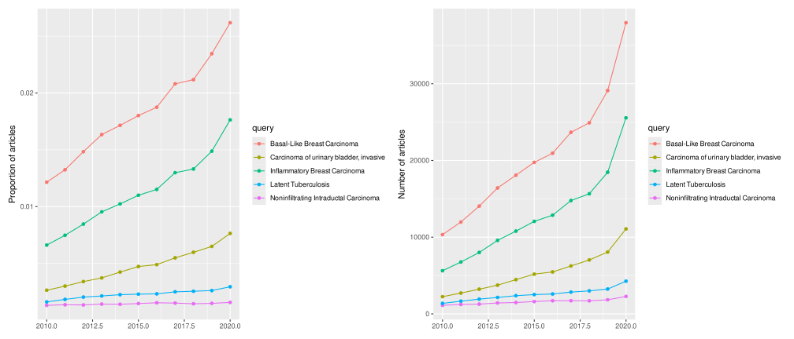
14.15 Volcano plot for ORA results
The volplot() function provides volcano plot visualization for over-representation analysis (ORA) results, allowing users to visualize the relationship between fold change (or other effect size metrics) and statistical significance.
# Example using enrichment result with fold change information
# Note: volplot requires results with fold change values
volplot(edo)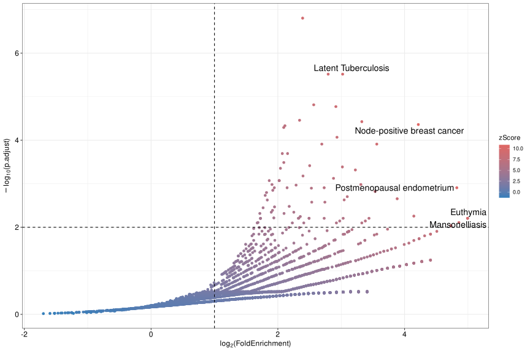
The volplot() function accepts standard ggplot2 aesthetics and can be customized with additional parameters for point size, color, and labeling thresholds.
14.16 Horizontal GSEA plot
The hplot() function creates horizontal versions of GSEA plots, which can be useful for comparing multiple gene sets side-by-side or for presentations where horizontal layout is preferred.
# Example using GSEA result
edo2 <- gseDO(geneList)
hplot(edo2, geneSetID = 1:3)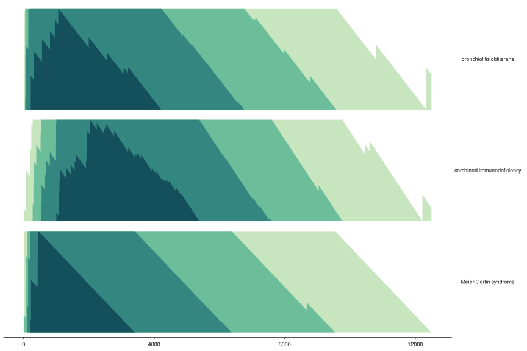
The hplot() function supports the same parameters as gseaplot2() but arranges the output horizontally. This is particularly useful for comparing multiple pathways or when vertical space is limited.
14.17 GO Graph
The goplot() function can accept the output of enrichGO and visualize the enriched GO induced graph. See Figure 14.42 for an example.
library(clusterProfiler)
library(org.Hs.eg.db)
data(geneList, package = "DOSE")
de <- names(geneList)[abs(geneList) > 2]
ego <- enrichGO(de, OrgDb = org.Hs.eg.db, ont = "BP", readable = TRUE)goplot(ego)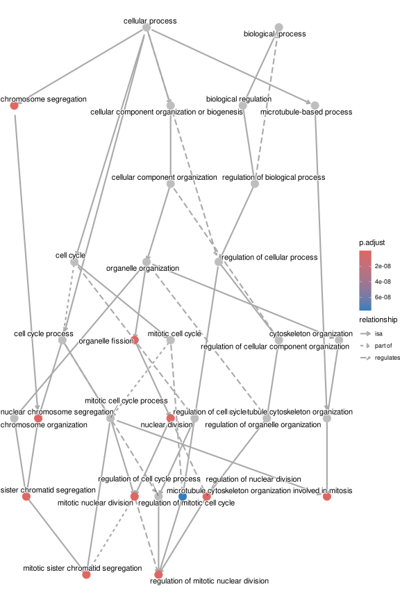
The plotGOgraph() function is another option to visualize the GO topology.
plotGOgraph(ego)References
Wu, Tianzhi, Erqiang Hu, Shuangbin Xu, et al. 2021. “clusterProfiler 4.0: A Universal Enrichment Tool for Interpreting Omics Data.” The Innovation 2 (3): 100141. https://doi.org/10.1016/j.xinn.2021.100141.
Yu, Guangchuang. 2018. “Using Meshes for MeSH Term Enrichment and Semantic Analyses.” Bioinformatics 34 (21): 3766–67. https://doi.org/10.1093/bioinformatics/bty410.
Yu, Guangchuang, and Qing-Yu He. 2016. “ReactomePA: An r/Bioconductor Package for Reactome Pathway Analysis and Visualization.” Molecular BioSystems 12 (2): 477–79. https://doi.org/10.1039/C5MB00663E.
Yu, Guangchuang, Le-Gen Wang, Yanyan Han, and Qing-Yu He. 2012. “clusterProfiler: An r Package for Comparing Biological Themes Among Gene Clusters.” OMICS: A Journal of Integrative Biology 16 (5): 284–87. https://doi.org/10.1089/omi.2011.0118.
Yu, Guangchuang, Li-Gen Wang, Guang-Rong Yan, and Qing-Yu He. 2015. “DOSE: An r/Bioconductor Package for Disease Ontology Semantic and Enrichment Analysis.” Bioinformatics 31 (4): 608–9. https://doi.org/10.1093/bioinformatics/btu684.